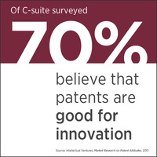
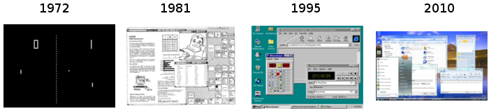
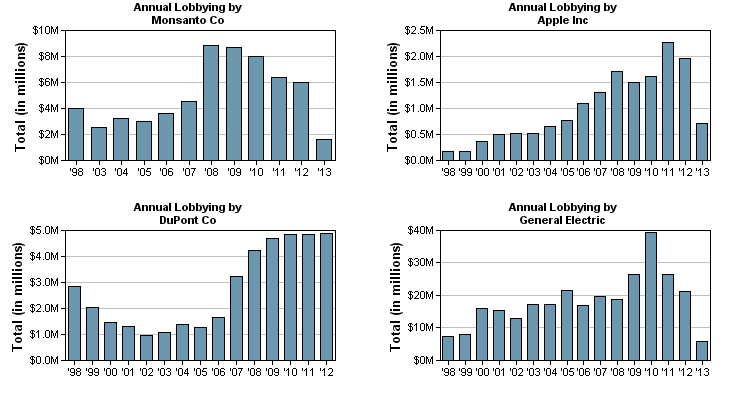
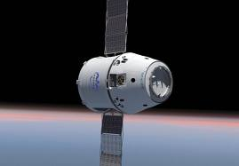

It turns out that the hunches of these executives is correct. There's clear evidence that without patents innovation comes to a halt. As an example let's look at the software patents. The software patents became legal in 1981.2 One picture is worth thousand words. Have a look how much boost has this given to the evolution of the GUIs since that year (make sure to note the year of the screenshot to infer the speed of innovation): 3

There are some niche domains where the companies don't use the patent system to encourage the innovation in their area and thus its innovation rate is abysmal. For an example let's look at the pornographic industry. If you issue a Google Patent Search with the keyword "pornography" you get only about 46 400 results.4 This number suggest a very low innovation rate compared to other industries.5 This is a quite reliable metric, just look how sluggish the innovation was in the porn industry: 6,7
todo: mention patent trolls http://www.techdirt.com/articles/20130501/09000922908/when-startups-need-more-lawyers-than-employees.shtml
Do you think Bill Gates would have managed to accumulate so much wealth and build so big monopoly as he did without our beloved patents? Just hear his opinion about them from 1991: 11
If people had understood how patents would be granted when most of today's ideas were invented, and had taken out patents, the industry would be at a complete standstill today. I feel certain that some large company will patent some obvious thing related to interface, object orientation, algorithm, application extension or other crucial technique. If we assume this company has no need of any of our patents then they have a 17-year right to take as much of our profits as they want. The solution to this is patent exchanges with large companies and patenting as much as we can.
Innovation is a hard procedure and so the patent system rewards the innovators with all the riches. With lots of money the company can buy lots advertising to force the wannabe imitators out of media focus and also with loads of money makes it possible for lobby the politicians for the better future for all of us (the innovators are smart people after all). With lobbying they don't only improve laws to make sure the bastard imitators can't enter the industry12 but every well spent dollar on lobbying returns sometimes even up to $220.13 And how much money is spent on lobbying you ask? Here are some stats: 14

What would happen without patents? There would be lots of smaller companies all struggling with competition and they wouldn't have any other option other than spend their all their money on innovation.15 And every innovation would be public domain so the shady imitators wouldn't even need to spend money on R&D, as expertise will be public for anyone to grab. Just look how well everybody automatically understands the intricacies of the Linux kernel just because it is open source.
And not only that but not many companies could grow large. If nobody has access to a large share of a nation's wealth then that means the wealth is well distributed. That is clearly a sign of an economic situation gone wrong.
And how would a poor inventor get some returns on his invention if not from patents? Just look how complicated process the steam engine engineers followed after Watt's patent for the steam engine expired: 16
Because of uncertainty in coal mining, a modest number of investors engaged in mutual insurance by each owning shares in a broad cross-section of mines. As is the case with shareholders in publicly traded companies, this means that each investor was able to capture the benefit of innovation, regardless of which particular firm or engineer made the improvement. And indeed, the employment contracts of engineers reflected these incentives. Engineers were employed on a contract basis by particular mines to improve engines, with the understanding that they would publish their results. Investors captured the common gains to all mines from each innovation, while engineers, having signed away the right to monopolize their invention, profited instead from their fees and by the advertising value of publicizing their innovations.
mention: the inventor of the internet and the midi inventor
Without the patent system no sane inventor would have any motivation to innovate. In the reality though you can find some insane people who decided not to patent their inventions.
For example Tim Berners-Lee decided not to patent his creation the World Wide Web. Now imagine how better off would every one be when every time you access a website you would need to pay one cent to Tim. Tim would be much richer, there would much more websites and the whole world wide web would be much more innovative. What a wasted oppurtinity!
https://www.techdirt.com/articles/20110811/10245715476/what-if-tim-berners-lee-had-patented-web.shtml http://tech.fortune.cnn.com/2013/04/11/one-of-techs-most-successful-inventors-never-made-a-cent/
Or for another example look at Dave Smith the inventor of the well known MIDI. This technology used in many areas of the sound/music industry ranging from various electronic instrument communications to playing back ringing tones on your ancient phones. This technology is so widely used that if he would have patented it he would be a billionaire. His reason for not patenting? "We wanted to be sure we had 100% participation, so we decided not to charge any other companies that wanted to use it." What an idiot!
For innovative ideas like Amazon's one click buy invention 19,20 which pushes the envelope of the technology the only way to retain its innovative value is to use the patent system. But there are many more innovative ideas which need a defense by laws, here's a sampling: 21

Silly and obvious inventions like SpaceX's rockets are not patented28, people don't even bother with them. Because of this SpaceX will soon go bankrupt after the imitators start to copy their inventions, as every other company which has not patented its ideas, like:
todo: report the number of lawsuits and the cost it imposed on the various industries
todo: mention the number of patent lawyers and the entry earnings of a patent lawyer
todo: mention most useful innovations and which of those are patented
Innovations in Most Fields Are Not Patented. www.youtube.com/watch?v=K4apopEG3QQ
todo: mention the ever increasing number of fields with patents (and new suggested ones like sport moves)
1 "70% of business leaders representing more than 30 industries say that patents are good for innovation", http://www.intellectualventures.com/assets_docs/10PatentPerceptionsBusted_1-pager.pdf
2 "In 1981, the Supreme Court stated that [...] a claim is patentable if it contains a mathematical formula [and] implements or applies the formula in a structure or process which, when considered as a whole, is performing a function which the patent laws were designed to protect", https://en.wikipedia.org/wiki/Software_patents#United_States
3
You can see four systems on the picture:
a. Pong, video game,
https://en.wikipedia.org/wiki/Pong
b. Xerox "Star",
http://www.digibarn.com/friends/curbow/star/retrospect/
c. Windows 95,
https://en.wikipedia.org/wiki/Windows_95
d. Windows 7,
https://en.wikipedia.org/wiki/Windows_7
4 Google Patent Search returned 46 400 matches in 2013, https://www.google.com/?tbm=pts#tbm=pts&q=pornography
5
All search result counts are from 2013:
- automobile, 4 390 000,
https://www.google.com/?tbm=pts#tbm=pts&q=automobile
- bicycle, 1 060 000,
https://www.google.com/?tbm=pts#tbm=pts&q=bicycle
- ironing, 235 000,
https://www.google.com/?tbm=pts#tbm=pts&q=ironing
6 Thank You, Porn! 12 Ways the Sex Trade Has Changed the Web, http://www.pcworld.com/article/155745/porn_on_the_web.html
7 Online porn often leads high-tech way, http://usatoday30.usatoday.com/money/industries/technology/2004-03-09-onlineporn_x.htm
8 "While riches were being minted and squandered in the dot-com '90s, Gordon made a fortune by taking a commission for processing sales on a range of sites from small, mainstream retailers to others like ClubLove, which published the Pamela Anderson-Tommy Lee sex tape", https://www.nytimes.com/2008/05/18/technology/18gordo.html
9 In a 2003 interview: "The adult entertainment industry was the first to use streaming JPEG push video, which was video that worked in web, in the browser and didn't require a plug-in", http://www.onthemedia.org/2003/nov/28/sex-technology/transcript/
10 "acquiring higher resolution pornographic images faster promoted broadband connections", http://history.tamu.edu/faculty/coopersmith/coopersmith%20personal/Does%20Your%20Mother%20Know.pdf
11 http://en.swpat.org/wiki/Bill_Gates_on_software_patents
12 "Eleven major scientific societies representing more than 80,000 biologists and food professionals last month released a report excoriating the EPA's policy. [...] BIO and the Monsanto Co. not only have supported EPA's policy in the face of potent scientific and economic arguments against it, but also have actually tried to persuade some of the societies to disavow the report. [...] Consider who benefits from EPA's regressive policies. EPA gets to create a costly new bureaucracy for regulating garden and crop plants. The agricultural chemical/biotechnology corporate giants thrive while their smaller competitors struggle against artificially high market-entry barriers.", http://articles.latimes.com/1996-09-23/local/me-46717_1_pesticidal-plants
13 "The outright return on lobbying costs, according to one of the various studies that served as inspiration for the Strategas index, was $220 for each $1 spent." http://www.economist.com/node/21531014
14
Lobbying statistics:
Monsanto:
https://www.opensecrets.org/lobby/clientsum.php?id=D000000055"
Apple:
https://www.opensecrets.org/lobby/clientsum.php?id=D000021754"
DuPont:
https://www.opensecrets.org/lobby/clientsum.php?id=D000000495"
General Electric:
https://www.opensecrets.org/lobby/clientsum.php?id=D000000125"
15 "At its inception, the dye industry was a French-British business the same way that almost any industry was a French- British business until the second half of the nineteenth century. In both countries patent protection applied to all kinds of industrial products. In 1862 British firms controlled about 50% of the world market, and French firms another 40%, Swiss and German companies being marginal players. By 1873 German companies had 50% of the market, while French, Swiss and British firms controlled between 13% and 17% each. In 1913 German firms had a market share of more than 80%, the Swiss had about 8%, and firms in the rest of the world had largely disappeared. During this entire period there was no patent protection at all in Switzerland, while in Germany processes become patentable in 1877 but products did not. In France, the U.K. and the U.S. both products and processes had been patentable all along.", Against Intellectual Monopoly, Chapter 9, section Chemicals Without Patents, http://levine.sscnet.ucla.edu/papers/imbookfinalall.pdf
16 Against Intellectual Monopoly, Chapter 3, section The Industrial Revolution and the Steam Engine, http://levine.sscnet.ucla.edu/papers/imbookfinalall.pdf
17 Plant Variety Protection Act of 1970, https://en.wikipedia.org/wiki/Plant_Variety_Protection_Act
18 "The agreement specifically states that the grower will not save or sell the seeds from their harvest for further planting, breeding or cultivation", http://www.monsanto.com/food-inc/Pages/seed-saving-and-legal-activities.aspx
19 https://en.wikipedia.org/wiki/1-Click,
20 Patent: Method and system for placing a purchase order via a communications network, http://www.google.com/patents/US5960411
21 Against Intellectual Monopoly, Chapter 4, section Errors in Patenting, http://levine.sscnet.ucla.edu/papers/imbookfinalall.pdf but you can find others here: http://www.freepatentsonline.com/crazy.html, http://www.crazypatents.com/, http://www.totallyabsurd.com/, http://www.patentlysilly.com/.
22 Patent: Bread refreshing method, http://www.google.com/patents/US6080436
23 Patent: Sealed crustless sandwich, http://www.google.com/patents/US6004596
24 Patent: Method of putting, http://www.google.com/patents/US5616089
25 Patent: Method of swinging on a swing, http://www.google.com/patents/US6368227
26 Patent: User-operated amusement apparatus for kicking the user's buttocks, http://www.google.com/patents/US6293874
28 "We have essentially no patents in SpaceX.", http://www.wired.com/wiredscience/2012/10/ff-elon-musk-qa/all/
29 The History Of Rolling Luggage, http://travelproluggageblog.com/2010/06/luggage/the-history-of-rolling-luggage/
30 "Ferrero have made a decision not to seek protection for any aspect of the process or composition for Nutella", http://www.cullens.com.au/news-events/ideas-into-assets-r-blog/not-everything-needs-to-be-patented/
31 "Pepsi is also the first company to respond to consumer preference with light-weigh, recyclable, plastic bottles.", http://pepsibrattleboro.com/historyofPepsi
32 "Pepsi Beverages Company has decided not to patent this idea", The Orange Revolution, http://books.google.com/books?id=YkHn8ogq9JMC&pg=PA101&lpg=PA101"